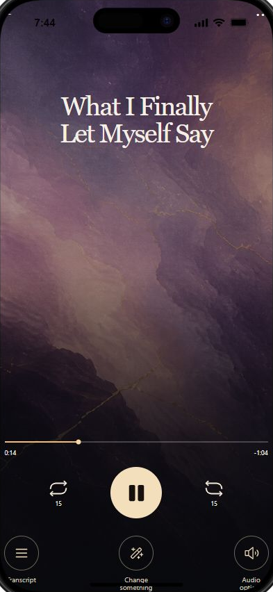
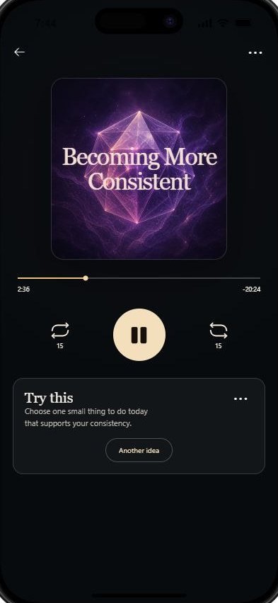
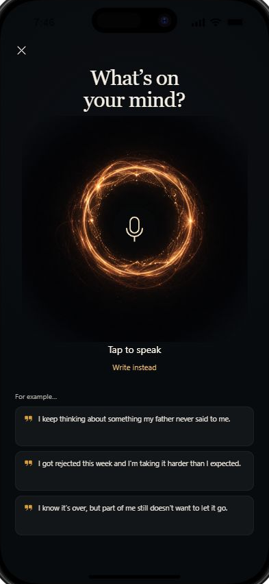
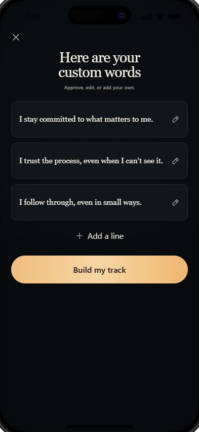
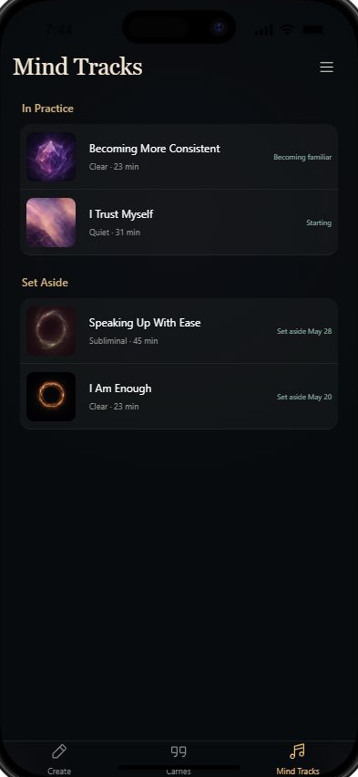
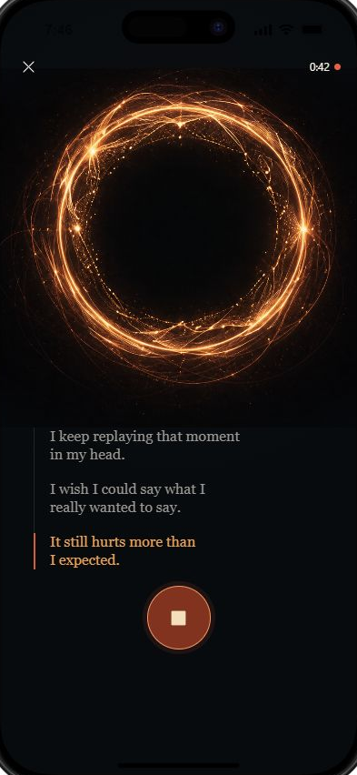
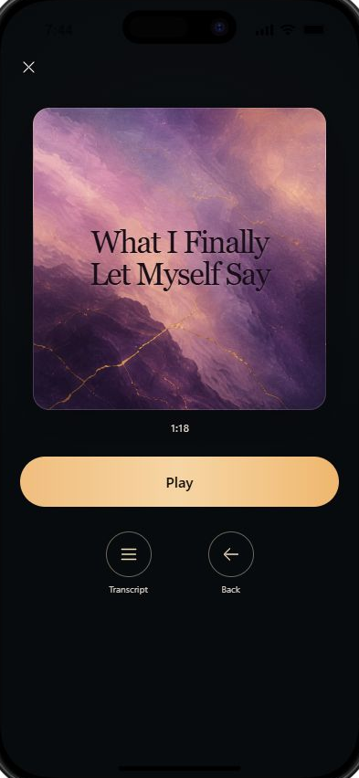
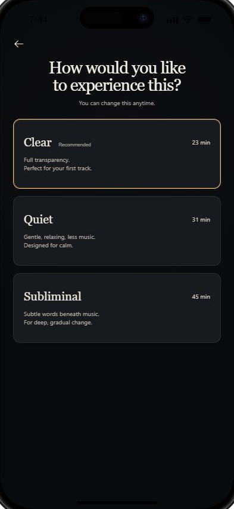
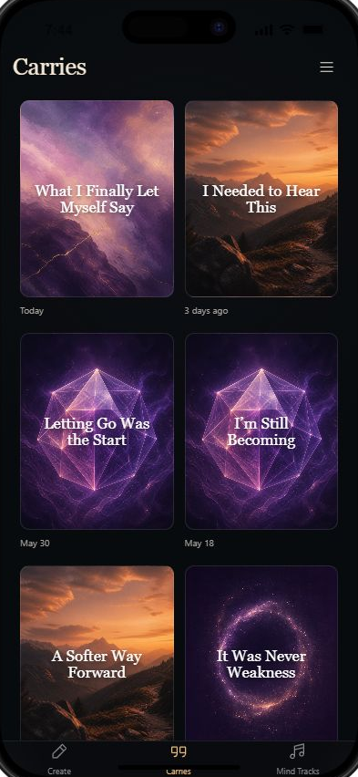

Words to Carry
For the moment you’re in.
Say what happened, what hurts, what is unfinished, or what you need to hear. Receive one finished voiced Carry for that moment.
Speak or write what’s on your mind. InnerReset transforms real expression into private, personalized audio you can keep, return to, and build from.



Give the moment a shape. Receive something finished.
Share what’s on your mind—out loud or in your own words.
InnerReset turns raw expression into carefully formed words and audio.
A finished personal artifact arrives—made to be heard, kept, and revisited.
Save it to your private library and return when it matters.
Two ways to create. Two private libraries. One place to begin.
For the moment you’re in.
Say what happened, what hurts, what is unfinished, or what you need to hear. Receive one finished voiced Carry for that moment.
For the direction you want to strengthen.
Start with an intention. Review the exact words. Choose how you want to hear them. Receive a Mind Track built from what you approved.

Return to what you are practicing.
Keep your tracks, listen again, try one optional practice, and update progress on your own terms.

One place to begin. A finished artifact on either path.



Words to Carry

A Mind to Build
Give InnerReset something real.
Receive something worth keeping.
InnerReset is built around personal artifacts, not public performance. Your words stay under your control.
Review our privacy principlesThis is your reset.
Speak. Write. Listen. Keep what matters.
Get Early Access